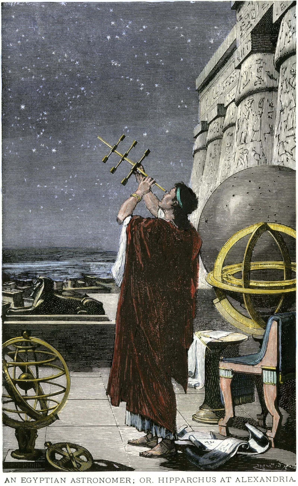
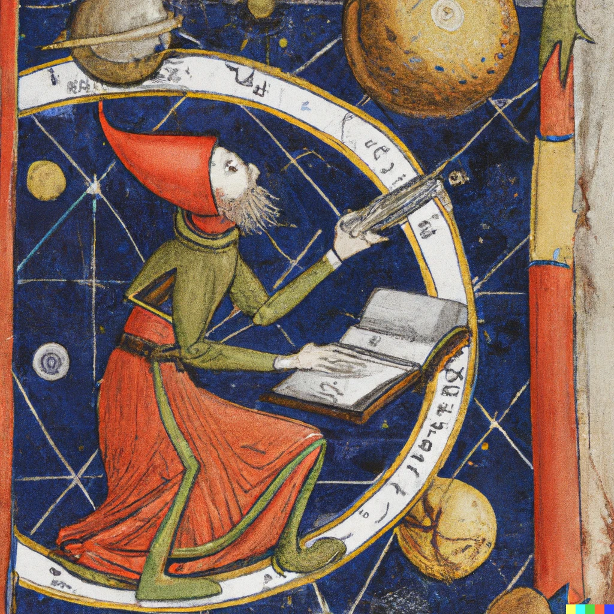
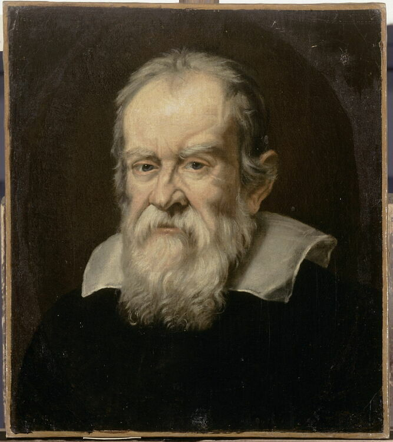
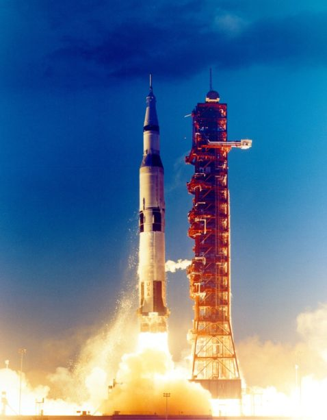

L’histoire de l’astronomie !
C’est une longue histoire
🔸 Antiquité

~3000 av. J.-C. – Les Babyloniens* observent les étoiles.
~3000 av. J.-C. – Ils créent aussi les premiers catalogues célestes.
~1400 av. J.-C. – En Égypte, les étoiles servent à créer un calendrier basé sur le Nil.
~500 av. J.-C. – Pythagore pense que la Terre est sphérique.
~150 av. J.-C. – Ptolémée décrit un univers géocentrique (la Terre au centre).
*Les Babyloniens étaient un peuple de l’Antiquité qui vivaient en Irak. Ce sont les premiers astronomes de l’histoire.
🔸 Moyen Âge

~ 800–1200 – Les savants arabes comme conservent et développent les savoirs grecs.
*Les savants arabes ont protégé les connaissances grecques, ce qui a aidé à préparer la Renaissance scientifique en Europe.
🔸 Renaissance

1543 – Copernic publie le modèle héliocentrique (le Soleil au centre).
1609 – Galilée observe les lunes de Jupiter avec une lunette*.
1619 – Kepler publie ses lois sur le mouvement des planètes.
*La lunette veut dire lunette astronomique, c’est un instrument optique qui est comme un télescope, mais qui permet de voir des objets très loin.
🔸 Époque moderne

1687 – Newton explique la gravité universelle dans *Principia Mathematica.
1781 – Herschel découvre la planète Uranus
*Le Principia Mathematica est le livre dans lequel Isaac Newton a formulé les lois du mouvement et la gravitation universelle.
🔸 Époque contemporaine

1916– Einstein publie la théorie de la relativité générale.
1929 – Hubble découvre que l’univers est en expansion.
1957 – Lancement de Spoutnik 1, le premier satellite artificiel.
1969 – Neil Armstrong marche sur la Lune.
1990 – Lancement du télescope spatial Hubble.
2019 – Première image d’un trou noir.
*La plupart est déjà citée dans la page Lois et théorème pour cette époque.